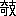
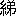

織物の發達は、世界の古い國々に於ても、支那は其の最も勝れた國であつて、殊に蠶絲の發達が古代からあつて、之を西洋の方にも輸出したのは前漢頃からでもあらうかと思はれ、日本に輸出されたのは後漢頃からではあるまいかと思はれる。兎も角絹の生産地として大變古い歴史を持つて居るのである。其の文獻に現はれたのも隨分古いので、先秦の古書と謂はれる尚書、詩經、周禮、爾雅といふ樣な書籍に見えて居つて、中にも尚書の益稷篇――今文尚書で言へば皐陶謨の一部であるが――に所謂虞の十二章と謂ふものが見えて居る。それは一部分は繪即ち書き文樣とも考ふべきものであつて、一部分は繍即ちヌヒである。恐らく衣服に關する文樣として最も古いものは、此の書文樣、ヌヒ文樣から出たと云ふことを考へ得られるであらう。其の中で日月星辰山龍華蟲は、繪即ち書き文樣であつて、藻火粉米黼黻は繍即ちヌヒ文樣である。かう謂ふものが何代頃から在つたかは、尚書に見えて居つても、もとより確實には知り得ないが、その原始的である點から見て餘程古いものと考へられるのである。
尚書の禹貢篇に至つては、織物に關する記事が種々載つて居るが、其の中で最も注意すべきものは織文、織貝である。織文は古くから錦綺の類だと解釋せられて居るが、是は染色は一定して居つて、織方によつて文樣が色々にあらはれるのであらうかと思はれる。織貝に至つては昔から説が二つに分れて居つて、僞古文尚書の説では、織は細紵なりと解し、貝を水物と解して居るので、貝の方は織物と關係無い樣であるが、此の説は謬つて居ると謂はれて居る。貝といふのも、やはり織物であつて、詩經の中にも貝錦とあるから、貝は一種の錦の名稱であるといふのが正しい。此の織物はやはりいろ／＼に染めた絲を織ると一種の文樣が出來る者で、所謂織色といふ樣なもので、織りあげた結果、一種の色の出るものであらうと思はれる。此等は隨分古くから織物の發達したといふことを徴すべきものである。其の外、
 若しくは帛といふ文字の如きは、絹織物の總名として使用せられて居つたので、其の産出が尠なからざりしことを推測することが出來る。
若しくは帛といふ文字の如きは、絹織物の總名として使用せられて居つたので、其の産出が尠なからざりしことを推測することが出來る。又染物のことに就いても爾雅に、
一染謂之※［＃「糸＋原」、39-7］。再染謂之 。三染謂之※［＃「糸＋熏」、39-7］。
。三染謂之※［＃「糸＋熏」、39-7］。
とあり、又周禮の考工記には、。三染謂之※［＃「糸＋熏」、39-7］。
三入爲※［＃「糸＋熏」、39-9］。五入爲※［＃「糸＋取」、39-9］。七入爲緇。
といふことがあつて、染物の發達も想像せられる。但然し之を實物に徴する事は今日では殆んど難かしい。支那に於ける從來の發掘品でも、發掘者の不注意の爲か、三代の織物が發掘せられたことは無い。其の時の製作法がずつと後世迄も傳はり、六朝から唐代迄傳はつた者があるかも知れぬ。例へば錦といふ樣な文字は、其の時分から後世迄共通されて居るけれども、果して三代の時の錦、例へば貝錦と六朝以後のものとが同樣であるかどうかは、判斷を下し難い。虞の十二章などの説明から考へると、餘程原始的なもので、今日の苗族とか南洋地方などの織物の樣な種類ではないかと考へられるが、併し禹貢にある織物などは、又それとは異つて餘程發達したものゝ樣にも考へられる。一口に先秦時代といつても、大變長い年數を經て居るのであるから、一樣には考へられない。先づこの時代のものは實物から證據立てることはむづかしいといふより外は無いのである。其の次の時代になり、兩漢三國六朝頃になると、此等はいくらか少くとも實物をたよりに想像し得られるのである。尤も今日迄實物で織物の文樣のある者など多く見たこともないが、我邦等でも漢から六朝迄の間の鏡鑑が古墳から出る時に、それを包んだ
綺。也。其文邪。不順經緯之縱横也。
とあるが、今日古い卷物の紐などに綺帶と稱して遺つて居るものは即ちこの
綾。凌也。其文望之如冰凌之理也。
とあるが、即ち其の文樣が といふ字があつて、并絲也と解釋してあるが、此等は絹本の宋元畫などに二本の絲を一所に織り込んだもやはり斯の如き種類であつたらうかと考へられるのである。
といふ字があつて、并絲也と解釋してあるが、此等は絹本の宋元畫などに二本の絲を一所に織り込んだもやはり斯の如き種類であつたらうかと考へられるのである。斯の如き方法で、實物がなくても、いくらか後世の實物からして想像し得られるものは漢代から既にあるのであつて、矧んや六朝頃のものになると、唐代のものと全く種類の變らぬものが多く出て來たのであるから、顧野王の玉篇などに載つて居る織物から以後は大體實物を想像し得られる。玉篇は顧野王の原本の存在して居るのは全體の半分にも足りないが、幸にも絲の部は原本が存在して居り、それから又た日本で作つた祕府略は、前田侯爵家に殘つて居る本が幸にも錦繍の部分であり、大平御覽などにも、唐以前六朝頃迄の古書を多く布帛の部に引用してあるので、それに依つて唐代以後の實物と對照して研究することが出來るのである。
その次は唐の時代であるが、此は前にも述ぶる如く、祕府略、大平御覽の如き書籍は勿論の事、最も文獻と實物との對照に有力なのは、例へば東大寺獻物帳の如き書籍を正倉院に存する實物と引き合はせることである。此の獻物帳の中には隨分種々な織物染物の名稱が出て居る。例へば織物としては前に擧げた錦、綾、綺の如きは明かに解し得るのであるが、其外、織成、刺納等の如きも、實物について見れば、其の
織成に就いての支那人の解釋では、錦と織成とを別けて、昔の織物は厚
を地として別に五彩の絲でそれに文樣を織る。其の素地のものを素錦と謂ひ、朱地のものを朱錦と謂ひ、其の地の無いものを織成と謂ふというて、錦と織成とを
錦。襄邑織文也。
とあつて、即ち襄邑から出る織文だとしてあり、これに參考になる文としては、續漢書輿服志に襄邑より年々織成虎文を獻ずと書いてある所を見れば、織文は織成と同じ意味である樣にも聞える。其の上、大平御覽に説文を引いた所では、此の錦は襄邑の織文なりといふ文を襄邑織成也と書いてある。尤も大平御覽に載つて居る織成の分には、今日で謂ふモウルを金縷織成など云つて居るから、唐の時代には錦と織成とは既に別々になつて居つたのかも知れない。兎も角時代によりて詞の意味に差異が出來てくるので、なか／＼解釋し難いが、獻物帳の織成といふのが如何なるものであるか、自分も未だ實物に就いて研究したことは無い。此の時代の
宋以後の織物はこれ迄も隨分研究せられて居る。それは一には
 裝用の
裝用の此の唐と宋との間は、織物にとりても一の大きな變化の時代であつたらうかと考へられるので、支那人の好尚も、其の間に頗る變化して居る樣である。大體唐以前は、一般の好尚は
を命名してと謂ふが、といふものは織物の下等な種類のものと考へられて居つた樣である。ところが宋以後はだん／″＼厚手の織物が發達して來て居る。現存して居る裝切、茶器に關する切でも、皆唐以前の如き薄い種類のものは無い。但僧侶の袈裟とかいふ樣な、古代の形式を保存すべき必要のあるものには、古い製品と同樣の明の頃から以後は緞子が發達して來た。此の緞子に關しても、支那人には一種の誤解をなして居るものがある。緞子は昔は段と謂うたといふので、漢代から存在するといふ説をなして居るものがある。それは文選に見ゆる張衡の四愁詩に、
美人贈我錦繍段。
とある。此が緞子だといふ説であるが、それは恐らく謬見であらうと思ふ。唐の時代には、地方の貢物の中に、貢段と謂ふものが六典等に現はれて居るが、それさへも今日の緞子だとは考へ得られない。紫野の大徳寺に大法被といふものがあつて、それに元代の繍をした織物を一部分に使用してあるが、其の織物を綉段と命名して居る。それは其の宋代明代の織物の名稱は、文獻にも屡々現はれて居つて、之を實物に引き合はせることも割合に困難ではないと思ふ。殊に宋代以後に貴ばれた刻絲の如きは、即ち京都で謂ふ
裝切などに使用せられて現存して居るので、之を文獻に引き合はすことが難くない。明代の織物などでも、一例を言へば、嘉靖年間、時の權相なる嚴嵩が失敗して家産を沒收せられた時に作られた目録があつて、それ等を見ると織物の名稱が隨分多く出て居る。斯の如きものを、今日に傳來して居る所の明代の織物に比較すれば、自然に其の一致點を見出すであらう。大體織物も長い歳月の間に變化を經て、昔存在した織物で早くなくなつて居るものもあり、又後世になつて新に出來たものもあり、其の名稱の變化もあることであるが、此等を出來るだけ實物と文獻とを一致させることが、即ち織物研究の基礎を爲す所以であつて、從來の茶人等の取つた方法にばかりよらずして、歴史的な考へ方をそれに加へるといふ事が必要であらう。茶人等の研究は、前にも言ふ通り、古くとも宋代位で止つて居つたが、今日に於てはそれよりも以前の唐代ぐらゐ迄のものを對象とする必要があらう。其の目的を達する爲には、學者と專門家との協力を必要とするので、織物學會の如きが其の機關として働くことを希望して已まない。
それから次に我々が織物研究に就いて必要なることは、織物の多くが支那産で、稀には南洋其の他の産もあるが、大部分は支那であるから、其の爲に支那の名目と日本の名目の對照といふことが研究上必要となつて來る。これは日本では餘程古くから考へられたことであらうが、整備せられて書籍に現はれて來たのは倭名抄の如きものからである。
近代に至つて新井白石の東雅などには、單に支那の名稱と日本の名稱との對照に止まらずして、日本名を有せる支那織物に對して、更に歴史的變遷の迹を考へる樣になつて來た。例へば倭名抄以前からの織物につけられた織物名が、今日では一般に通用されないものになつて、其の日本名のものが今日で何と呼ぶかを研究せなければならなくなつた。それであるから、近代の倭名抄の研究家、例へば狩谷
 齋の如きは、倭名抄に出て居る織物に對して、新井白石が取つたと同樣な研究方法で注釋を加へる樣になつた。例へば新井白石は綾の字をアヤと讀むことに就て、其の語源が漢の意味であると解釋し、狩谷齋は倭名抄の羅の字の注釋に於て、今俗に呂と呼ぶものがあるが、これは恐らくは羅の音の轉じたものであらうといふ解釋を下した。斯の如きことは、注意せずして讀み去る時は何でもないことであるが、これ實に織物の研究が歴史的になつて來た一端を示して居るのである。
齋の如きは、倭名抄に出て居る織物に對して、新井白石が取つたと同樣な研究方法で注釋を加へる樣になつた。例へば新井白石は綾の字をアヤと讀むことに就て、其の語源が漢の意味であると解釋し、狩谷齋は倭名抄の羅の字の注釋に於て、今俗に呂と呼ぶものがあるが、これは恐らくは羅の音の轉じたものであらうといふ解釋を下した。斯の如きことは、注意せずして讀み去る時は何でもないことであるが、これ實に織物の研究が歴史的になつて來た一端を示して居るのである。近代に於ては、又た支那の新しい織物に對して、日本で之を何と呼ぶべきかといふことに注意した人もある。明代の書籍に天工開物といふのがあるが、それが日本に於て飜刻せられた時に、いろ／＼なものゝ名目に、假名でもつて日本名をつけてあることは、餘程細密な注意を爲したものと見える。其の中に、綾の字にリンズと假名をつけ、紬の字にサヤと假名をつけて居るなどは、やはり實物に就いて考へたることであつて、殊に綾をリンズとしたのは、リンズといふ詞が綾の字の支那音から來たことを想はしめる。今日になれば、既に其のリンズ、サヤ、といふものさへも、既に古代織物の一部分に入つてしまつたのであるから、此等當時の必要からつけられた名稱も、今日では歴史的の名稱となつて來た、其の間に織物の名稱の變遷を研究する材料となつて來るのである。
斯の如く、日本にありて支那織物を研究するには、二重の手數をかける必要があるのであるが、其の代りに、名目の考へ方が歴史的に綿密になつて來る所から、却つて又た、支那人の如く緞子を古代から存在するものと考へ、織成の名稱にも歴史的の變遷あることを忘れる樣な誤りは自然に尠くなるのであるから、案外日本に於て研究するが爲に良好な成績を擧げ得るかも知れない。殊に正倉院其の他の如き古代の寶庫が存在し、宋代以後は茶人に依りて
（大正十三年一月十九日古代織物學會講演、同十四年五月雜誌「古代織物」掲載）